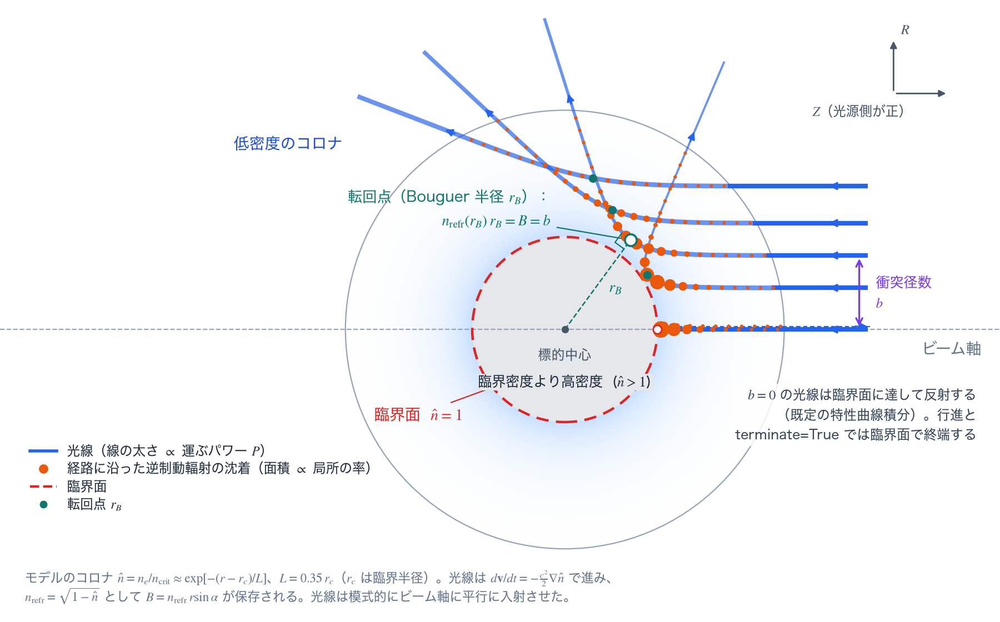
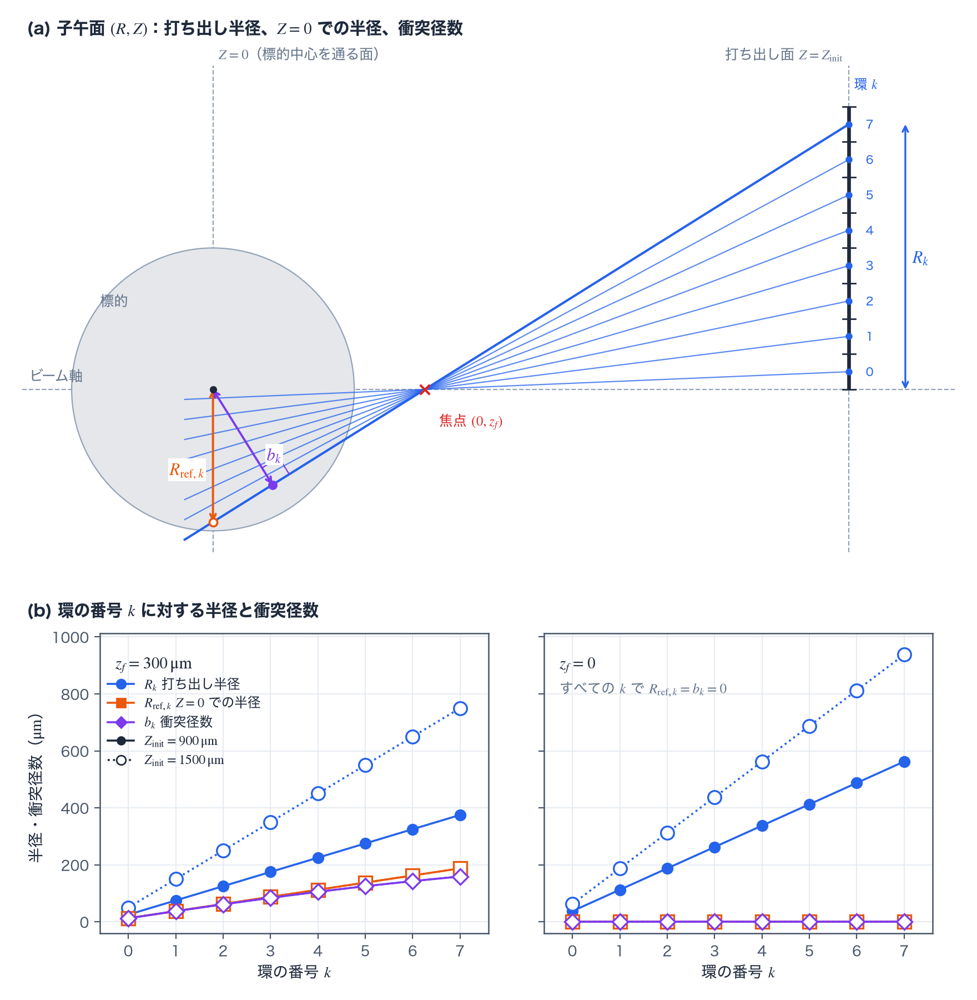

レーザー駆動と吸収 reference
TENRYU は、入力されたビーム光学と時間波形から光線束を作り、プラズマによる屈折と逆制動輻射（inverse bremsstrahlung、IB）吸収を解いて、電子系へエネルギーを付与する。1D 球対称の既定経路は \((R,Z)\) 面上の弦（chord）を追跡しつつ、場の参照と沈着（deposition）を半径 \(r\) に縮約する。2D RZ では任意方向の光線を 3 次元で追跡し、軸対称の場へ写像する。この計算に固有の用語は用語の節で説明する。
物理機構
プラズマ中の電磁波は分散関係（dispersion relation） \(\omega^2=\omega_{pe}^2+c^2k^2\) に従う。プラズマ周波数（plasma frequency） \(\omega_{pe}\) は電子密度とともに上がるので、レーザーから見たプラズマは屈折率（refractive index） \(n=\sqrt{1-n_e/n_{\rm crit}}\) — 密度が高いほど小さい — をもつ屈折媒質になる。臨界密度（critical density） \(n_{\rm crit}\) は、局所のプラズマ周波数がレーザー周波数に達して伝搬できなくなる密度で、レーザー波長の 2 乗に反比例（\(\lambda^{-2}\)）する。したがって 3 倍高調波の 351 nm 光は、基本波 1053 nm の 9 倍高い密度まで到達できる。光は屈折率の高い側へ曲がるという光学の一般則のとおり、光線は低密度側 = 高屈折率側へ、すなわち密度勾配を下って高密度のコアから離れる向きへ曲がる。臨界面を越えては伝搬できないため、正面から入射した光線はそこで反射し、斜めに入射した光線は臨界面より手前の転回点（turning point。その半径を後述の Bouguer 半径と呼ぶ）で折り返す。コロナでは波長が密度勾配長より十分短いので、波を光線の束として扱う幾何光学（geometrical optics）が有効である。
プラズマは逆制動輻射によって光を吸収する。波の電場で電子が集団的に振動し、電子–イオン衝突がその振動エネルギーを熱へ変換する。変換の速さは電子–イオン衝突周波数（electron–ion collision frequency）で決まり、吸収係数は \(\kappa_{\rm IB}\propto \hat n\,\nu_{ei}/\sqrt{1-\hat n}\)（\(\hat n=n_e/n_{\rm crit}\) は臨界密度で規格化した電子密度）、衝突周波数は \(\nu_{ei}\propto \bar Z n_eT_e^{-3/2}\ln\Lambda\)（\(\ln\Lambda\) はクーロン対数、Coulomb logarithm）である。\(\nu_{ei}\) が \(n_e\) に比例するため、臨界近傍の因子を除けば \(\kappa_{\rm IB}\propto\hat n^2\) と密度の 2 乗で増え、\(T_e^{-3/2}\) により低温ほど強く吸収する。因子 \(1/\sqrt{1-\hat n}\) は臨界面近傍での群速度（group velocity）の低下を表し、減速した光は臨界面の近くに長く留まってさらに吸収される。したがって、臨界未満のコロナを格子で表すことは、数値上の便宜ではなく物理的な前提条件である。真空と固体を不連続につなぐと、光線は吸収が起こるべき低密度の経路を持たないまま臨界密度に達し、ほぼ無吸収で反射する。下の実務上の要件が、その帰結を定量的に示す。
v1 の既定の駆動は、屈折する幾何光学の光線に沿った衝突性の逆制動輻射吸収である。1D 球の光線追跡の経路では、非マクスウェル分布による IB 低減を表す Langdon 因子（Langdon factor）を既定で適用する（全ビームが共通の gaussian / super_gaussian / flat_top プロファイルを持つ構成で自動的に有効になり、成立しない構成では自動的に無効へ解決される。Laser.ib.langdon_model="off" で明示的に切れる）。波動光学（干渉やスペックル）は既定では含まない。混合プラズマの衝突電荷 \(Z_{\rm eff}=\sum_sn_sZ_s^2/\sum_sn_sZ_s\)（\(n_s\)、\(Z_s\) は各イオン種の数密度と電荷数。Laser.ib.zeff_model）も既定で自動的に解決され、材料の電離段分率の表があるか、球の 1D で多種組成（CD など）が分かる構成では有効に、それ以外では無効になる。残る拡張吸収 — レーザー周波数でのクーロン対数（Laser.ib.coulomb_log_model）と、転回点での共鳴吸収（resonance absorption。Laser.ra） — は明示的に有効化するオプションで、既定はオフである。これらの拡張はいずれも 1D 専用である。TENRYU が扱うそれ以外のレーザー・プラズマ相互作用のチャネルは、独立した交差ビームエネルギー転送（cross-beam energy transfer、CBET。CBET の頁）カーネルと、ホット電子（hot electron。ホット電子の頁）カーネルが担当する。
実装が保証するのは二つ、決定論と保存である。決定論の側では、各ビームの波形を返す関数を初期化時に表へ凍結するので実行中に Python が動くことはなく、光線ごとの沈着もビーム単位の固定順序で総和するので、結果はビット単位で再現する。保存の側では、呼び出しのたびにエネルギー台帳（energy ledger）「入射 = 吸収 + 未吸収」を厳密に閉じる。光線がどう終わったか — 臨界面での逸出（escape）または沈着、メッシュからの退出、強度の下限による打ち切り — の分類が、残ったパワーを台帳のどちら側へ入れるかを決める。
この計算で使う用語
1D の流体量は半径 \(r\) だけの関数だが、レーザーは、ビームに固定した \((R,Z)\) 面の中で光線 1 本ずつの経路を求めて吸収を数える（次節）。TENRYU はこの光線の束を、以下の単位で作り、進め、再利用する。ここに挙げる用語は、このページの計算、とくに TENRYU の実装に固有の意味で使うので、まとめて定義する。
弦、環、打ち出し面
弦（chord）は、1 本の光線の、ビーム軸と標的中心を含む \((R,Z)\) 面（子午面、meridional plane）の中の経路である。\(R\) はビーム軸からの距離、\(Z\) はビーム軸に沿った座標で、標的中心を原点とし、光源の側を正とする。真空中の弦は直線（球を横切る弦）で、プラズマの中では光線が屈折して曲がる。1D の流体量は半径 \(r=\sqrt{R^2+Z^2}\) だけの関数なので、光線の経路はこの 1 つの面の中で求めれば足りる。
環（ring）は、打ち出し面（次の段落）上の開口を、ビーム軸のまわりの同心円で等しい幅に分けた輪である。開口の半径は \(R_{\rm beam}=|Z_{\rm init}-z_f|/(2F)\) で、\(F\) は F 値（F-number）、\(Z_{\rm init}\) は打ち出し面の位置、\(z_f\) は焦点の位置（次の項）である。\(R_{\rm beam}\) を \(N_{\rm ray}\) 等分した幅 \(\Delta R=R_{\rm beam}/N_{\rm ray}\) の環 \(k=0,1,\dots,N_{\rm ray}-1\) を作り、環 \(k\) ごとに 1 本の光線を、環の中心の半径 \(R_k=(k+1/2)\Delta R\) の点から、軸上の焦点を通る直線に沿って打ち出す。環の面積 \(\Delta A_k=\pi[(k+1)^2-k^2]\Delta R^2\) と強度分布が環のパワーの重み \(w_k\) を決め、光線はその環のパワーを運ぶ（ビーム光学）。環の分け方と光線の向きは図Bの上段に示す。
環の数 \(N_{\rm ray}\) は Laser.rays_per_beam で、1D の既定は 1000（Studio の既定も 1000）、10 以上でなければならない。環を細かくするほど、強度分布と、光線ごとに異なる屈折・吸収の分解能が上がるが、追跡する光線の本数に比例して計算量が増える。1D の円筒・平板では、環をビーム軸のまわりの方位角にも Laser.raytrace.azimuthal_rays（既定 16）等分して、環ごとにその数の光線を追跡する。2D RZ の rays_per_beam（既定 128）は、環の数ではなく、ビーム断面を覆う 2 次元配列の 1 辺の点数である。
打ち出し面（launch plane）は、光線を打ち出す、ビーム軸に直交する面 \(Z=Z_{\rm init}\) である。標的中心から光源の側へ \(Z_{\rm init}\) だけ離れ、LaserMesh の外側の端 \(R_{\rm max}\) に取る。LaserMesh は流体の状態に合わせて呼び出しごとに作り直すので、コロナが広がると打ち出し面も外へ動く。打ち出し面とプラズマの表面のあいだは真空で、光線は直線で進み、プラズマに入ってから屈折する。
衝突径数、打ち出し半径、標的中心を通る面での半径
衝突径数（impact parameter）は、光線を屈折のない直線とみなしたときの、その直線と標的中心との距離 \(b\) である。真空から入射する光線では、光路に沿って保存される Bouguer 不変量 \(B\)（次節）が衝突径数に等しい。球対称のプラズマでは、密度などの分布が同じなら、衝突径数だけで光線の転回点の半径が決まる（図A）。
1D の光線について、衝突径数のほかに、ビーム軸からの距離を表す半径が 2 つある。混同しやすいので、環 \(k\) の光線について区別して書く。
打ち出し半径（launch radius） \(R_k=(k+1/2)\Delta R\) は、環 \(k\) の光線を打ち出す点の、ビーム軸からの距離である。
標的中心を通る面での半径 \(R_{{\rm ref},k}\) は、光線の直線が、標的中心を通りビーム軸に直交する面 \(Z=0\) を横切る点の、ビーム軸からの距離である。強度分布はこの半径で評価する。この面は打ち出し面と違って動かないので、コロナが広がっても重みは変わらない。3 つの量の違いは図Bに、焦点が標的中心にある場合とない場合、打ち出し面の位置を変えた場合を並べて示す。
光線は、打ち出し半径 \(R_k\) の点から、軸上の焦点 \((R,Z)=(0,z_f)\) を通る直線に沿って進むので、標的中心を通る面での半径と衝突径数は次のとおりである。
$$ R_{{\rm ref},k}=R_k\frac{|z_f|}{|Z_{\rm init}-z_f|},\qquad b_k=\frac{|z_f|\,R_k}{\sqrt{R_k^2+(Z_{\rm init}-z_f)^2}}. $$\(z_f\) は焦点の位置で、標的中心を原点に、ビーム軸に沿って光源の側を正とする。ビームが \(-z\) 向きに進むデッキ（Studio の既定）では、Laser.beams[].focus の z 座標に等しい。Studio の既定は 0 µm（標的中心）である。
\(R_{{\rm ref},k}\) と \(b_k\) は、打ち出し面の位置 \(Z_{\rm init}\) によらない。\(R_{{\rm ref},k}=(k+1/2)|z_f|/(2FN_{\rm ray})\)、\(b_k=|z_f|\sin\theta_k\)（\(\tan\theta_k=(k+1/2)/(2FN_{\rm ray})\)、\(\theta_k\) は光線とビーム軸のなす角）と書けるので、焦点の位置、F 値、環の番号だけで決まる。焦点が標的中心にないとき（\(z_f\neq0\)）、どちらも \(k\) とともに単調に増える。\(b_k\) は打ち出し半径 \(R_k\) とも \(R_{{\rm ref},k}\) とも一般に等しくない。
焦点が標的中心にある（\(z_f=0\)）と、すべての光線が標的中心を通るので、すべての環で \(b_k=0\)、\(R_{{\rm ref},k}=0\) となり、強度分布は重みを変えない（環の面積だけが重みを決める）。この場合に強度分布を指定すると、入力の検証が警告を出す。
行進と区間
行進（marching）は、光線の方程式（次節）を、刻み \(\Delta s\) ずつ進めて解く方法である（Laser.raytrace.integrator="leapfrog"）。刻みは、その位置の半径方向の節点の間隔に Laser.raytrace.cfl_ray（既定 0.8）を掛けた値を基準にして、経路に沿って適応的に変え（手順の 3）、1 本の光線は最大 Laser.raytrace.max_steps 回（既定、上限とも 100000）まで進む。行進は一般的な方法で、2D RZ の 3 次元の光線もこの方法で進める。1D 球対称の既定は特性曲線積分（その節）で、行進の刻み幅による誤差と、転回点に近づくと刻みが細かくなる負荷がない。
区間（segment）は、光線の経路を区切った 1 片で、光学的厚さ（optical depth）\(S\) と沈着を区間ごとに求める。行進では 1 回の刻みで進む経路が 1 区間で、区間が流体セルの面をまたぐときの損失は区間の中点のセルへ沈着する。特性曲線積分では、半径方向の節点や流体セルの面などの区切り点のあいだの経路が 1 区間で、各区間は 1 つの流体セルに収まる。
LaserMesh
LaserMeshは、レーザーの光線追跡のために流体メッシュとは別に持つ、\((R,Z)\) 面の構造格子である。流体の密度、電子温度、平均電離度 \(\rho,T_e,\bar Z\) から、電子密度を臨界密度で規格化した \(\hat n\) とその勾配を節点へ写し、光線の位置での値は節点のあいだの補間で求める。LaserMesh の外側の端 \(R_{\rm max}\) が打ち出し面の位置 \(Z_{\rm init}\) になり、光線がこの範囲の外へ出ると、その光線の追跡を終えて、残りのパワーを未吸収に入れる（メッシュからの退出）。
1D 球対称では、LaserMesh の半径方向の節点を呼び出しごとに作り直す。臨界半径の両側に、間隔 \(dR_{\rm fine}\) の一様な細帯を各側 \(64\,dR_{\rm fine}\) の幅を目標に置き、細帯の外側は等比級数で粗くする（コア側の比 1.08、コロナ側の比 1.05）。\(dR_{\rm fine}\) は、臨界面の近くの最小の流体セル幅に Laser.lasermesh.mesh_factor を掛けた値で、mesh_factor の既定は 0.5、Studio がゴーストコロナと一緒に書き出す値は 0.1 である。\(Z\) 方向の節点は \(R\) 方向の節点を 0 の両側へ鏡映したもの（\(n_z=2n_r\)）である。外側の端は、\(\hat n\) が Laser.lasermesh.rmax_n_hat_threshold（既定 0.001）以上の最も外のセルの外面の Laser.lasermesh.r_max_factor（既定 1.5）倍で、半径方向のセル数 \(n_r\) は Laser.lasermesh.nr_max（既定 4096）以下に抑える（超えるときは \(dR_{\rm fine}\) を大きくする）。2D RZ では、流体の対称軸に沿う \(n_r\times n_z\) セルの LaserMesh（Laser.lasermesh.nr、nz。既定 128 × 256）を 1 つだけ作り、節点の幾何は初期化後に固定する。
LaserMesh は流体のセルとは独立なので、最も外側の物質セルより外側（ゴーストコロナや真空）にも節点を置ける。最も外側の物質セルまでの領域では、1D の光線追跡カーネルが読む半径方向の参照配列を、流体セルの面と中心に固定した節点の上で作る（LaserMesh と光線の行進）ので、mesh_factor を変えても、この領域の節点は動かない。LaserMesh の節点の間隔は、外側の領域の節点の間隔（行進の刻みの基準と、特性曲線積分の区間の数）と、打ち出し面の位置に効く。節点数 \((n_r+1)(n_z+1)\) に比例して、GPU のメモリと場の写像の計算量が増える。
ビームグループ
ビームグループ（beam group）は、2D RZ で 1 回のトレースを共有するビームの組である。極角（ビームの向きと対称軸のなす角）の差が \(10^{-6}\) rad 未満で、F 値、強度分布、焦点が同じビームを 1 グループにまとめる。焦点は、ビームの向きを基準にした位置で比べ、軸のまわりの回転や鏡映で重なるものは同じとみなす。軸対称の場では、極角が同じビームは、軸のまわりに回しても同じ吸収の分布を与えるので、グループの代表の 1 本だけを追跡し、その光線にグループのパワー（メンバーのパワーの和）を運ばせる。CBET が有効なときは、波長のずれ \(\Delta\lambda\) が同じビームだけをまとめる。1D 球対称ではビーム 1 本が 1 グループで、同じ条件のビームが 1 回のトレースを共有する仕組み（弦の節）は、これとは別に働く。
再利用キャッシュ
再利用キャッシュ（reuse cache。Laser.raytrace_skip）は、直前に光線を追跡した結果を保存し、プラズマがほとんど変わっていないあいだは、光線を追跡せずにその結果を使う仕組みである。保存するのは、パワーあたりの沈着の分布 \(\hat f_{g,c}\)（セル \(c\) の沈着を、その沈着を作ったパワーで割った値）と、そのときのセルごとの密度 \(\rho\)、電子温度 \(T_e\)、平均電離度 \(\bar Z\) である。分布は、1D ではビーム 1 本につき 1 つ（\(g\) はビームの番号）、2D RZ では全ビームグループの沈着の和を総パワーで割った 1 つだけである。再利用するステップでは、現在のパワー \(P_g\)（1D ではビーム \(g\) のパワー、2D RZ では全ビームの総パワー）を掛けて、セル \(c\) の沈着を \(\sum_g\hat f_{g,c}P_g\Delta t\) と作る。
キャッシュは既定で無効である（Laser.raytrace_skip.enabled=False）。有効にすると、キャッシュを取った時点からのプラズマの変化 \(\delta\) が threshold（既定 0.01）を下回るあいだ再利用し、連続して再利用するのは max_consecutive（既定 10）回までとする。ほかにも新たに追跡する条件があり、手順の 7 に挙げる。\(\delta\) は、norm="max_relative"（既定）では、全セルの \(\rho\)、\(T_e\)、\(\bar Z\) の、キャッシュ時の値に対する相対変化の最大値、"l2_relative" では、全セルと 3 つの量にわたる、現在の値に対する相対変化の二乗平均平方根である。相対変化の分母には、ゼロ割りを避ける下限を置く（\(\rho\) と \(T_e\) は床（floor）の値、\(\bar Z\) は 0.01）。
再利用したステップでは、光線の追跡の費用がかからない。パワーで掛け直すことは、吸収係数がパワーに依らないかぎり厳密である。Langdon 因子は強度に依存するので、有効なときは厳密ではなく、総パワーの変化を 1% 以内に抑える条件が誤差を抑える。2D RZ の分布は全ビームグループを重ねた 1 つなので、グループ間のパワーの比が変わっても分布は更新されず、判定が見るのは総パワーの変化だけである。沈着の分布はキャッシュを取った時点のもので、プラズマが \(\delta\) まで変わるあいだは更新されない。
裾のクロージャ
裾のクロージャ（tail closure）は、臨界面に近づく光線の残りの吸収を、数値積分の代わりに解析式で閉じ、そこで光線を終える処理である。臨界面の近くでは \(\kappa_{\rm IB}\propto(1-\hat n)^{-1/2}\) が発散するので、臨界面までの経路を有限の刻みで追跡して打ち切ると、最後の刻みの吸収を過小評価する。ここで裾とは、臨界面の手前で \(\kappa_{\rm IB}\) が急に大きくなる最後の区間である。臨界面へ向けて密度勾配を上る光線について、\(\hat n\) が局所的に線形に増えて 1 に達するとみなし、残りの光学的厚さを次式で求める。
$$ \tau_{\rm tail}=\frac{2A_0}{|\nabla\hat n|_0}\left(u_0-\tfrac23u_0^3+\tfrac15u_0^5\right),\qquad u_0=\sqrt{1-\hat n_0}. $$添字 0 は処理を始める点での値、\(A_0\) は \(\kappa_{\rm IB}=A\hat n^2/\sqrt{1-\hat n}\) と書いたときの係数 \(A\) である。吸収パワー \(\Delta P=-P\operatorname{expm1}(-\tau_{\rm tail})\) を、始点を含む流体セルへ沈着する（\(\tau_{\rm tail}\) は 700 までに制限する）。光線の残りのパワーは終端の設定（terminate_mode。終端の節）に従って扱う。
処理を始めるのは、光線が密度勾配を上っていて（\(\mathbf v\cdot\nabla\hat n>0\)）、\(\hat n\ge0.5\)、\(1-\hat n<A_0/|\nabla\hat n|\)、かつ局所の転回の隙間 \((1-\hat n)\sin^2\theta\) が \(4\times10^{-4}\) 未満のときである（\(\theta\) は光線の向きと密度勾配のなす角）。これより斜めの光線は閉じずに追跡を続け、自然に転回する。光線が臨界半径（\(\hat n=1-\varepsilon_{\rm crit}\)。Laser.absorption.eps_crit、既定 \(10^{-4}\)）に達するときは、ほかの条件を問わずに同じ式で閉じる。線形な層への垂直入射では、この式は解析積分と一致し、全吸収は 16/15 則（検証）に一致する。行進と、critical_handling.terminate=True の特性曲線積分がこの処理を使う。既定の特性曲線積分（terminate=False）は、光線を臨界半径で反射させるので、この処理を評価しない。
1D 球対称の弦に沿う光線追跡
1D の流体状態は半径だけの関数だが、斜入射での光路長と屈折を表すため、光線の運動はビームに固定した \((R,Z)\) 平面で解く。光線の位置から \(r=\sqrt{R^2+Z^2}\) を求め、電子密度、温度、電離度を 1D の半径方向分布から参照し、吸収したパワーも対応する流体セルへ直接加える。球対称性により、ビームの空間的な向きは吸収の分布を変えない。したがって、点灯するすべてのビームについて、その時間ステップでのパワー、F 値、軸上の焦点、波長のずれ \(\Delta\lambda\)、強度分布（種類と \(w_0\)、\(m\)。表の分布では標本）が完全に一致するときに限り、1 本のビームだけを追跡し、その沈着をビームの本数だけ足し合わせる。1 つでも異なれば、各ビームをそれぞれのパワーで別に追跡する。詳細ログ（Main.verbosity="verbose"）、光線の出力（Laser.ray_output_count が 0 より大きいとき）、スナップショットを書くステップ（光線の密度診断を作るため）、CBET が有効なときも、各ビームを別に追跡する。
プラズマの屈折率と光線の方程式は次のとおりである。
$$ n_{\rm refr}=\sqrt{\max(\varepsilon_n,1-\hat n)},\qquad \hat n=\frac{n_e}{n_{\rm crit}},\qquad \frac{d\mathbf v}{dt}=-\frac{c^2}{2}\nabla\hat n $$- \(\varepsilon_n\)（namelist では
Laser.absorption.eps_n、既定 \(10^{-4}\)）は \(n_{\rm refr}\) に下限を課し、臨界密度で屈折率と IB の分母が発散しないようにする。CBET の前置因子も同じ下限を共有する。 - \(d\mathbf v/dt=-\tfrac{c^2}{2}\nabla\hat n\) は、時間を媒介変数とする光線の方程式である。有効ポテンシャル \(c^2\hat n/2\) 中の運動とみなせるため、シンプレクティックな積分器で軌道を求められる。
- \(B=n_{\rm refr}(r)r\sin\alpha\) は、半径方向にのみ変化する屈折率のもとで光線の角運動量保存を表す、球対称の Bouguer 不変量である。そのずれは、検証で用いるトレース品質の監査量になる（\(\alpha\) は動径と光線のなす角 — 次段落で定義する）。
- \(\kappa_{\rm IB}=\hat n\nu_{ei}/[c\sqrt{1-\hat n}]\) では、\(\hat n\nu_{ei}\) が振動エネルギーの衝突による変換、\(1/\sqrt{1-\hat n}\) が群速度の低下を表し、\(\nu_{ei}(T_e,\bar Z,\ln\Lambda)\) は cgs + eV で評価する。
- \(\Delta P=-P\operatorname{expm1}(-S)\) は区間の光学的厚さ \(S\)（行進では台形則（trapezoidal rule）、特性曲線積分では求積で求める）を使い、光線の搬送パワー \(P\) からの吸収量を計算する。\(1-e^{-S}\) を直接引き算せず
expm1で評価するので、光学的に薄い（\(S\ll1\) の）区間でも桁落ち（loss of significance）しない。各区間の損失を（行進では区間の中点へ）沈着し、パワーは差分で更新するため、1 本の光線に沿った損失の総和では隣り合う項が打ち消し合い（望遠鏡和、telescoping sum）、入口と出口のパワー差に厳密に一致する。 - \(w_k\) は、強度分布の値と、開口を分割した環（用語）の厳密な面積の積を、すべての環にわたって規格化した重みであり、光線束が指定したビームパワーを運ぶようにする。強度分布は、標的中心を通る面での半径 \(R_{{\rm ref},k}\)（用語）で評価する。この面は打ち出し面と違って動かないので、コロナとともに打ち出し面が外へ動いても重みは変わらない。
球対称の屈折率のもとでは、Bouguer 不変量 \(B=n_{\rm refr}(r)\,r\sin\alpha\)（\(\alpha\) は動径方向と光線のなす角）が光路に沿って一定に保たれる。これは中心力場での角運動量保存の光学版である。転回点（光線の半径が最小になる点）では光線が動径と直交して \(\alpha=\pi/2\) になるので、転回点の半径 — Bouguer 半径 \(r_B\) — は \(B=n_{\rm refr}(r_B)r_B\) の解として決まる。衝突径数 \(b\) の異なる光線はそれぞれ異なる深さで滑らかに折り返し、入射側と出射側の両方の区間で逆制動輻射吸収を受ける。正面から入る \(b\approx0\) の光線だけは折り返さずに臨界面に達し、既定の特性曲線積分ではそこで反射する（行進と terminate=True では終端する）。経路の例を図Aに示す。

terminate=True では終端する）。ビーム光学、スポット、波形
F 値は \(F=f_{\rm focal}/D_{\rm lens}\)、集光円錐の半角は \(\theta_{\rm beam}=\tan^{-1}(1/2F)\) である。打ち出し面から焦点までの距離が与えられると、打ち出し面での開口半径は \(R_{\rm beam}=|Z_{\rm init}-z_f|/(2F)\) になる（\(Z_{\rm init}\) は打ち出し面の位置、\(z_f\) は焦点の位置。用語）。1D ではこの開口を隙間なく \(N_{\rm ray}\) 個の環へ分け、環 \(k\) の光線を、打ち出し半径 \(R_k=(k+1/2)\Delta R\) の点から、焦点を通る直線に沿って打ち出す。ここで \(\Delta R=R_{\rm beam}/N_{\rm ray}\) であり、環の面積は \(\Delta A_k=\pi[(k+1)^2-k^2]\Delta R^2\) である（幾何は図B）。
ガウス型・スーパーガウス型（super-Gaussian）の相対強度 \(I\) と、環 \(k\) の重み \(w_k\) は、標的中心を通る面での半径 \(R_{\rm ref}\)（用語）を使って次式で与える。
$$ I(R_{\rm ref})\propto \exp\!\left[-2\left(\frac{R_{\rm ref}}{w_0}\right)^{2m}\right],\qquad w_k=\frac{I(R_{{\rm ref},k})\Delta A_k}{\sum_j I(R_{{\rm ref},j})\Delta A_j}. $$ここで \(R_{{\rm ref},k}\) は、環 \(k\) の光線の直線が標的中心を通りビーム軸に直交する面を横切る点の、ビーム軸からの距離で、\(R_{{\rm ref},k}=R_k|z_f|/|Z_{\rm init}-z_f|\) である。\(w_0\) は、この面で強度が \(e^{-2}\) となる半径で、\(m=1\) がガウス型、\(m\) を大きくするほど頂部が平坦で縁の急な分布になる。焦点が標的中心にある（\(z_f=0\)）と、すべての環で \(R_{{\rm ref},k}=0\) になり、強度分布は重みを変えない。2D RZ では、同じ分布をビーム軸に直交する面上の円形の 2 次元配列へ適用する。
LaserBeam.power(t_s) は、秒を受け取って W を返す関数である。初期化時に 0 から Main.t_end までを標本化し、線形補間する凍結された表へ変換する。TENRYU Studio は、(1) 一定の頂部に任意の直線的な立ち上がり・立ち下がりを付けた矩形、(2) ピークパワーまたは総エネルギー、半値全幅（full width at half maximum、FWHM）、中心時刻で指定するガウス型、(3) CSV または点の編集による折れ線の表、という 3 形式を関数として生成する。

LaserMesh と光線の行進
1D 球対称では、LaserMesh の半径方向の節点 1 組から、ビームに固定した \((R,Z)\) 構造を作る。\(Z\) 方向の節点は \(R\) 方向の節点を 0 の両側へ鏡映したものである。光線追跡カーネルが読む半径方向の参照配列は、流体セルの面と中心に固定した節点（流体の外側では LaserMesh の半径節点）の上で作る。2D RZ では単一の LaserMesh を流体の対称軸に合わせ、節点の幾何は初期化後に固定する。LaserMesh の上で光線を進める方法は、1D の既定の特性曲線積分（次節）と、行進（用語）である。これらの方法による処理の手順は、手順の節に示す。
特性曲線積分（1D の既定）
1D の既定（Laser.raytrace.integrator="auto"）では、光線を刻み幅で行進させる代わりに、特性曲線に沿って区間ごとに積分する（下の手順 3 の行進は "leapfrog" で選べる。1D 球のみ）。球対称の場では光線の角運動量、すなわち上で定義した Bouguer 不変量 \(B\)（真空から入射する光線では衝突径数）が保存されるので、\(\varepsilon=1-\hat n\)、\(Q(r)=r^2\varepsilon(r)-B^2\)（経路上で \(Q\ge0\)）として
を半径について積分すればよい（\(\phi\) は子午面内の極角）。経路は半径方向の参照配列の節点と流体セルの面などで区間に区切り、各区間の中で転回点（\(Q=0\)）、臨界、中心を事象として厳密に求める。区間の光路長・角度・光学的厚さは適応 Gauss–Kronrod 求積で求め、転回点（半径 \(r_B\)）の近くでは \(u=\sqrt{r-r_B}\) を変数にして \(1/\sqrt Q\) の特異性を取り除く。各区間はひとつの流体セルに収まるので、吸収はそのセルへ直接入る。行進の刻み幅による誤差と、転回点に近づくと刻みが細かくなる負荷がない。
この積分器では、臨界半径（\(\hat n=1-\varepsilon_{\rm crit}\)、\(\varepsilon_{\rm crit}\) は Laser.absorption.eps_crit）に達した光線は既定で反射し（Laser.absorption.critical_handling.terminate=False）、同じ区間を外向きにたどって往復で吸収される。terminate=True では、行進と同じく裾のクロージャ（用語）で臨界層の残りの吸収を解析的に閉じて終端する。1D の円筒・平面（Mesh.geometry_1d）でも同じ形で、円筒では断面内の角運動量と軸方向の速度、平面では横方向の速度が保存量になる（ビームの power は円筒で単位長さ、平面で単位面積あたり）。
GPU では 1 本の光線を 32・64・128・256 レーンで追跡し、各レーンが経路に沿った 1 区間を受け持つ（Laser.raytrace.lanes_per_ray。既定の 0 は、全光線 × レーン数が GPU の同時に動かせるスレッド数に収まる最大の幅を選び、収まらなければ 32）。和の順序がレーン数で変わるので結果の丸めはレーン数によるが、同じ GPU・同じ光線数なら run の反復はビット一致する。別の種類の GPU とビットで比べるときはレーン数を固定する。
光線は内向きと外向きで同じ区間を通り、区間の光路長・角度・光学的厚さは半径の区間だけで決まるので、外向きの区間は内向きで求めた値をそのまま使う（Laser.raytrace.reuse_inward_integrals、既定 True）。臨界半径で反射する光線では、求積し直した場合とビット単位で同じ結果になる。転回点で折り返す光線では、転回点から離れた区間を内向きは \(r\)、外向きは \(u=\sqrt{r-r_B}\) を変数として求積していたので、同じ積分を同じ許容誤差（区間の \(10^{-7}\) 倍）で求めた別の値に置き換わり、Langdon 因子を評価する吸収の重心も区間幅の 2 次の大きさで動く。GXII（激光 XII 号、GEKKO XII）の 1D の爆縮では、結果の差は初期の時間刻みやレーザーエネルギーを 12 桁目で変えた計算どうしのばらつきと同じ大きさで、計算時間は 7〜12 % 短くなる。値の表に GPU のメモリを区間 1 つあたり 72 バイト × 光線数だけ使う（300 セル・1000 光線で約 100 MiB）。False では外向きの区間も求積する。
1 回のレーザー呼び出しの手順
再構築と写像。 LaserMesh（用語）を現在の流体の状態に合わせて作り直す。臨界面の近くには、最小の流体セル幅に
mesh_factor（namelist ではLaser.lasermesh.mesh_factor、既定 0.5）を掛けた細かい間隔の細帯を置き、コア側とコロナ側の両方へ等比級数的に粗くする。\(\rho,\bar Z,T_e\) を写して \(n_e\) を作り、節点のあいだの線形補間と、その厳密な微分 \(d\hat n/dr\) を使う。光線の構築。 各ビームのパワーを、凍結した波形の表から参照する。1D ではその時間ステップ \([t,t+\Delta t]\) での区分線形波形の厳密な平均 \(\bar P_b\) を使うので、時間ステップのエネルギーの和はパルスの積分に一致する。1D では、厳密な面積と強度分布の重みをもつ環ごとに、打ち出し半径 \(R_k\) の点から焦点を通る直線に沿う光線を作る。全ビームが同じ条件のときは 1 本のビームだけを追跡し、残りのビームには同じ沈着を足す（弦の節）。
光線を進める。 1D の既定の特性曲線積分（上の節）では区間ごとの求積で進める。以下は行進（
integrator="leapfrog"）と 2D RZ の場合である。光線の方程式はハミルトン系（Hamiltonian system）なので、シンプレクティックな積分器（symplectic integrator）を使えば保存量 — 球対称では Bouguer 不変量 — の系統的なドリフトを抑えられる。1D の経路は可変刻みの velocity-Verlet 法で、初期キックを別に置かず、前の副ステップぶんと現在の副ステップぶんの半キックをどちらも現在位置で評価し直す。この形にした理由は実測にある。速度を半ステップずらして持つ旧来のスタッガード型 leapfrog は、適応制御で \(ds\) が変わった瞬間に位相の中心がずれ、1 副ステップあたり \(O(|\nabla\hat n|\,|\Delta(\Delta s)|)\)（密度勾配の大きさと刻み幅の変化量の積に比例する）の系統的なハミルトニアン散逸を生んでいた。その結果、転回点が \(\hat n\) 換算で 0.027 浅くなり、往復の光学的厚さの 22% が失われていた。現行方式はこの不整合を除き、解析解との比較検査での転回点の誤差は \(\hat n\) 換算 \(1.1\times10^{-5}\)、往復光学的厚さの誤差は 0.008% である（2D RZ のraytrace_3dも、発射点の速さを \(\sqrt{1-\hat n}\) に合わせ、同じ形の可変刻みの velocity-Verlet 法で進める）。刻み幅の適応制御では、勾配と光学的厚さの指標は \(ds\) を広げる方向にだけ働き、\(ds\) を縮められるのは転回角の目標だけである。真空中の区間は弦と球面の厳密な交点で終え、真空から物質への受け渡しでは、次に参照する区間を物質側に固定する。区間ごとの沈着。 行進では台形則で光学的厚さ \(S\) を作り、\(\Delta P=-P\operatorname{expm1}(-S)\) を評価して、その損失分を区間の中点へ沈着する。特性曲線積分では、求積で求めた区間の光学的厚さで同じ式を評価し、損失を区間のセルへ沈着する。
終端。 \(\hat n\ge1-\varepsilon_{\rm crit}\)（
Laser.absorption.eps_crit、既定 \(10^{-4}\)）となった時点で裾のクロージャ（用語）により臨界面近傍の残りの吸収を解析的に閉じ、残ったパワーを臨界面での逸出・沈着の指定に従って配分する。1D の既定の特性曲線積分では、光線を臨界半径で反射させて追跡を続ける。メッシュからの退出と強度の下限による打ち切りで残った分は、未吸収へ入れる。総和と収支の検査。 光線ごとの沈着の行をビーム単位の固定順序で総和し、1D では半径方向の流体セルへ、2D RZ では近傍 4 点へ双線形に加熱を渡す。そのうえで「入射 = 吸収 + 未吸収」を検査する。
再利用キャッシュの利用、または無効化。 再利用キャッシュ（用語）を有効にし（
Laser.raytrace_skip.enabled=True。既定は無効）、次のいずれにも該当しないときは、光線を追跡せず、保存した沈着の分布へ現在のパワーを掛けて沈着を作る。次のいずれかに該当すると、光線を追跡し直して、キャッシュを取り直す。- 最初の時間ステップ（ステップ番号 0）である、またはキャッシュをまだ取っていない。
- キャッシュを取った時点からのプラズマの変化 \(\delta\) が、しきい値（
threshold、既定 0.01）以上である。 - 連続して再利用した回数が
max_consecutive（既定 10）に達した。 - 総パワーが、または 1D ではいずれかのビームのパワーが、0 と 0 でない値のあいだで遷移した。
- 総パワーが、キャッシュを取った時点から 1% を超えて変化した。
- いずれかのビームの向き（単位ベクトルの差の長さ）が \(10^{-10}\) を超えて、または焦点の位置が \(10^{-10}\) cm を超えて、またはデフォーカス（
defocus_DR）が \(10^{-12}\) を超えて変化した。 - ALE（arbitrary Lagrangian–Eulerian、任意ラグランジュ・オイラー法）のリゾーン（rezone）またはリマップを行った直後である（2D RZ のみ）。
- いずれかのセルで、判定 \(\hat n>\hat n_{\rm margin}-\varepsilon_{\rm crit\_guard}\) の結果がキャッシュを取った時点から変わった（そのセルの \(\hat n\) が帯の境界をどちらかの向きに横切った。\(\hat n_{\rm margin}\) は LaserMesh の臨界クリップ値
Laser.lasermesh.critical_margin、保護幅Laser.raytrace_skip.crit_guardの既定は 0.01）。 - CBET が有効（1D のみ。2D RZ で CBET が有効な計算はキャッシュを使わない）で、いずれかのビームのパワーが、キャッシュを取った時点から 1% を超えて変化した（ビーム間の交換で吸収が非線形になるため）。
radial_absorption_1d、ホット電子が有効な計算、2D RZ で CBET が有効な計算は、このキャッシュを使わない。
IB 沈着、臨界面、終端
逆制動輻射の吸収係数は、群速度の低下を含む \(\kappa_{\rm IB}=\hat n\,\nu_{ei}/[c\sqrt{1-\hat n}]\) である。\(\nu_{ei}\) は \(T_e\)、\(\bar Z\)、クーロン対数から cgs + eV で評価する。行進では各区間の光学的厚さ \(S=(\kappa_n+\kappa_{n+1})\Delta s/2\)（特性曲線積分では求積で求めた値）に対して、
$$ \Delta P=-P_n\operatorname{expm1}(-S),\qquad P_{n+1}=P_n-\Delta P $$とすることで、光学的に薄い領域での桁落ちを避ける。\(\Delta P\) は、行進では区間の中点へ、特性曲線積分では区間のセルへ沈着する。パワーを差分で更新しているため、1 本の光線に沿って損失を総和すると隣り合う項が打ち消し合い（望遠鏡和）、\(\sum\Delta P=P_0-P_{\rm final}\) が丸めを除いて厳密に成立する。
行進と critical_handling.terminate=True の特性曲線積分では、\(\hat n\ge1-\varepsilon_{\rm crit}\) で光線を終端し、係数が発散する領域へは進めない。1D の裾のクロージャ（用語）は、進入時の係数と密度勾配から、残りの光学的厚さを解析的に閉じる。既定の terminate_mode="escape" は、終端時に残ったパワーを、反射・散乱で逃げた未吸収分として記帳する。"deposit" は、残った分を臨界面に隣接する許可された受け側へ沈着させる別のクロージャである。この投入は光路上の逆制動輻射吸収と物理的に同じではないため、意図して選ぶ必要がある。メッシュからの退出や強度の下限による打ち切りで残った分も未吸収へ入り、「入射 = 吸収 + 未吸収」の台帳を閉じる。1D の既定の特性曲線積分では terminate の既定が False で（terminate_mode="deposit" を選ぶと True のまま）、光線は臨界半径で反射し、臨界半径までの吸収を求積で数える。terminate=False と "deposit" は併用できない。
2D RZ と簡易な半径方向モード
2D RZ の raytrace_3d は、各光線を \((x,y,z)\) で追跡する。場は軸対称の LaserMesh 上の \(\hat n(R,Z)\) から読み、\(R=\sqrt{x^2+y^2}\) と連鎖律で 3 次元の勾配へ変換する。任意方向のビーム断面を 2 次元の光線配列で覆い、逆制動輻射による沈着の位置を \((R,Z)=(\sqrt{x^2+y^2},z)\) へ戻して、近傍 4 節点へ双線形に分配する。同じビームグループ（用語）のビームは、1 回のトレースを共有する。
radial_absorption_1d は 1D 専用の簡易な経路である。RZ での光線の運動を解かず、全ビームの \(P_{\rm total}(t)=\sum_bP_b(t)\) を、外側から内側へ向かう 1 本の半径方向の流束として、セルの順に逆制動輻射で減衰させる。このモードでは、方向・F 値・焦点・強度分布・光線数は吸収の分布を変えず、光線軌跡の出力もない。1D の円筒・平面幾何（Mesh.geometry_1d）の raytrace_2d は特性曲線積分で動く（行進は球のみ）。
namelist による制御
以下は、レーザー駆動に直接関係するキーの抜粋である。検証規則の全体は namelist リファレンスを参照のこと。
| キー | 値 / 単位 | 用途 |
|---|---|---|
Laser.enabled | bool | レーザー演算子と LaserMesh を有効化。 |
Laser.wavelength_nm | nm | \(n_{\rm crit}\)、IB、屈折率を決める真空中の波長。 |
Laser.mode | "raytrace_2d" / "radial_absorption_1d" / "raytrace_3d" | 順に、1D の弦追跡、1D の簡易な半径方向、2D RZ の 3 次元追跡である。 |
Laser.rays_per_beam | 1D 既定 1000、2D 既定 128（いずれも 10 以上） | 1D では環の数、2D ではビーム断面配列の 1 辺の点数。 |
Laser.raytrace.integrator | "auto" | 1D の光線の積分器。"auto" は 1D で特性曲線積分（"characteristic"）、それ以外で行進（"leapfrog"）。 |
Laser.raytrace.lanes_per_ray | 0 | 特性曲線積分で 1 本の光線を追跡するレーン数（32・64・128・256）。0 は光線数と GPU から自動で選ぶ。 |
Laser.raytrace.reuse_inward_integrals | True | 特性曲線積分で、外向きの区間に内向きで求めた積分を使う。False では外向きも求積する（2026-10-03 より前と同じ算法。核の引数が増えたので、以前の build とビット単位で同じ結果になるかはコンパイラによる: CUDA 12.6 の nvcc では同じ、12.0 では積和の融合が変わり末尾の桁で違う）。 |
Laser.absorption.critical_handling.terminate | 特性曲線積分で False（terminate_mode="deposit" では True）、ほかは True | False では臨界半径で光線を反射させる（特性曲線積分のみ）。 |
Laser.beams[] | 1 本以上 | 各ビームの direction、power、f_number、焦点・デフォーカスを定義する。 |
Laser.beams[].profile | w0_um, m | super_gaussian による横方向の強度分布。\(m=1\) はガウス型である。 |
Laser.absorption.critical_handling.terminate_mode | "escape" / "deposit" | 臨界面での終端時に残ったパワーを、未吸収として扱うか、終端で沈着させるかを選ぶ。 |
| Studio の波形 | 矩形 / ガウス型 / 表 | 立ち上がり・立ち下がり付きの矩形、半値全幅で指定するガウス型、点列の表を、ビームごとの関数として生成する。 |
検証
- 線形な \(\hat n(r)\) 分布に対する通しの検査では、厚さ \(\ell\) にわたって臨界密度まで線形に上がる密度分布の 2 つの閉形式 [11] と吸収率を比較する：正面入射の細い光線に対する「Beer 16/15 則」— 片道の IB 光学的厚さが \(\tau=C\ell\int_0^1\hat n^2/\sqrt{1-\hat n}\,d\hat n=(16/15)C\ell\)（\(C\) はこの分布の IB 係数スケールで、検査は \(\sqrt{\varepsilon_n}\) の床の切り落としを差し引く）— と、斜入射のビームを積分した「\(\cos^5\) 則」— 入射角 \(\theta\) での往復吸収率 \(A=1-\exp[-(32/15)C\ell\cos^5\theta]\) — である。
- 複数の \(b\) について、軌跡の最小半径を解析的な Bouguer 半径（転回点の半径）と比較し、経路に沿った不変量のずれにも上限を課す。
test_ray_trace_characteristicは、特性曲線積分について、一様媒質の弦と折れ線の分布の半径方向の光線を解析解と、転回する光線の光学的厚さ・出口点・セル別の沈着を独立な参照解（光線の方程式のホスト上の Dormand–Prince 積分）と比べ、収束した細かい行進との一致、16/15 則、臨界半径での反射の往復吸収、円筒・平面の解析解、レーン数 32〜256 での一致と run の反復のビット一致を検査する。- 同じ線形分布の内部節点で \(\hat n\) と \(d\hat n/dr\) を解析解と照合し、場の写像と屈折力の忠実さを独立に検査する。
verify_gxii_1d_fld_regressionは、厚さ 10 µm のコロナ層（幅 2.5 µm のセルで 4 セル）を種にもつ統合デッキで、基準となるレーザー吸収率（回帰デッキの広いスポットの 12 ビーム照射での約 96% — 基準値の吸収エネルギー \(9.53\times10^{10}\) erg を、デッキの入射エネルギー \(9.9\times10^{10}\) erg（総パワー \(10^{13}\) W の台形パルスの積分）で割った値で、本ドキュメントの他の吸収率とは比較できない。3 つの条件対照は「例題とプリセット」ページ参照）と、最大圧縮時刻、ピーク密度、面密度、中心温度を判定する。- 単一物理のレーザー検査（L1。屈折、吸収、エネルギー台帳、光線数に対する収束を調べる試験群。記号の意味は試験のタグと用語の凡例）のうち、
test_l1_oblique_incidence_refraction.cuとtest_l1_beer_lambert_inverse_bremsstrahlung_slab.cuは、検査に必要なデッキの機能（ビーム角の指定、一様な平板での吸収係数の指定）が未実装であることを記録するだけで、判定は行わない。test_l1_laser_energy_balance_in_absorbed_escaped_reflected.cuはエネルギー台帳の相対誤差 \(\le10^{-6}\) を要求し、test_l1_ray_count_noise_convergence.cuは 1 辺あたり 257 本の光線を参照として、65 本から 129 本へ増やしたときに、参照との分布の差（二乗ノルムの相対値）が係数 \(\ge1.2\) で減少することを要求する。 - レーザーと流体の連成検査（L2）では、
test_l2_planar_ablation_front_benchmark.cuが圧力の 50% 以内での比較とアブレーション面の単調な後退という本来の判定基準を、test_l2_laser_to_hydro_energy_partition.cuが 5% 以内かつ \(f_{\rm thermal}>0.3\)（\(f_{\rm thermal}\)：測定時点で物質の内部エネルギーに入っている吸収レーザーエネルギーの割合）という本来の配分の判定基準を記録しているが、いずれも診断機能が未実装の状態である。test_l2_oblique_beam_target_offset_symmetry.cuも、現時点でのオフセット制御機能の未実装を記録している。
参考文献
- J. D. Huba, NRL Plasma Formulary, Naval Research Laboratory, NRL/PU/6770--19-652 (2019).
- J. Dawson and C. Oberman, "High-Frequency Conductivity and the Emission and Absorption Coefficients of a Fully Ionized Plasma," Phys. Fluids 5, 517–524 (1962). doi:10.1063/1.1706652
- T. W. Johnston and J. M. Dawson, "Correct Values for High-Frequency Power Absorption by Inverse Bremsstrahlung in Plasmas," Phys. Fluids 16, 722 (1973). doi:10.1063/1.1694419
- A. B. Langdon, "Nonlinear Inverse Bremsstrahlung and Heated-Electron Distributions," Phys. Rev. Lett. 44, 575–579 (1980). doi:10.1103/PhysRevLett.44.575
- J. P. Matte, M. Lamoureux, C. Moller, et al., "Non-Maxwellian Electron Distributions and Continuum X-Ray Emission in Inverse Bremsstrahlung Heated Plasmas," Plasma Phys. Control. Fusion 30, 1665–1689 (1988). doi:10.1088/0741-3335/30/12/004
- J. P. Freidberg, R. W. Mitchell, R. L. Morse, and L. I. Rudsinski, "Resonant Absorption of Laser Light by Plasma Targets," Phys. Rev. Lett. 28, 795–799 (1972). doi:10.1103/PhysRevLett.28.795
- D. W. Forslund, J. M. Kindel, K. Lee, et al., "Theory and Simulation of Resonant Absorption in a Hot Plasma," Phys. Rev. A 11, 679–683 (1975). doi:10.1103/PhysRevA.11.679
- A. Colaïtis, G. Duchateau, X. Ribeyre, et al., "Coupled Hydrodynamic Model for Laser-Plasma Interaction and Hot Electron Generation," Phys. Rev. E 92, 041101(R) (2015). doi:10.1103/PhysRevE.92.041101
- D. Turnbull, J. Katz, M. Sherlock, et al., "Inverse Bremsstrahlung Absorption," Phys. Rev. Lett. 130, 145103 (2023). doi:10.1103/PhysRevLett.130.145103
- M. Sherlock, P. Michel, D. J. Strozzi, et al., "Inverse Bremsstrahlung Absorption Rate for Super-Gaussian Electron Distribution Functions Including Plasma Screening," Phys. Rev. E 109, 055201 (2024). doi:10.1103/PhysRevE.109.055201
- W. L. Kruer, The Physics of Laser Plasma Interactions (Addison-Wesley, Redwood City, 1988) — 解析検査が使う線形分布の IB 吸収則と、Bouguer 不変量による光線光学の出典。